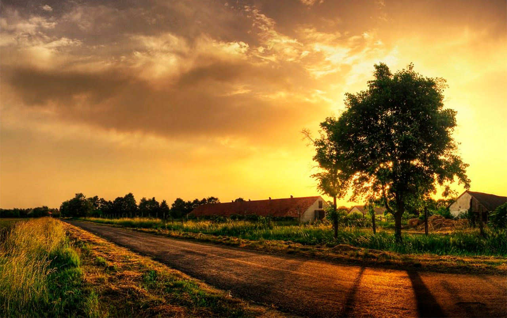
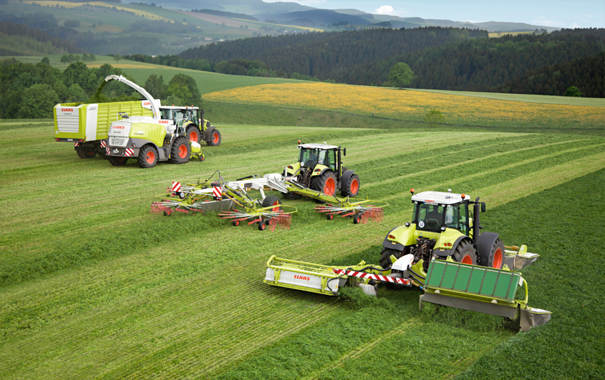

La granja tiene una longitud de 4 hectareas, perfectas para que los animales puedan criarse y vivir en plena armonia y poder maximizar sus facultades. Nos dedicamos tanto a la cria de animales para su posterior venta como a la produccion de alimentos y carne de estos. Al principio, estos terrenos no estaban edificados, pero, en 1916, nuestros antepasados decidieron empezar una granja, la cual sigue hasta día de hoy, aunque mucho más modernizada. A parte de estas labores, en nuestror terrenos tambien nos dedicamos al cultivo de diferentes tipos, como, por ejemplo, el trigo. Si quereís conocer mas acerca de nuestra historia e instalaciones, no dudeis en rellenar el formulario para hacer una visita guiada.
 